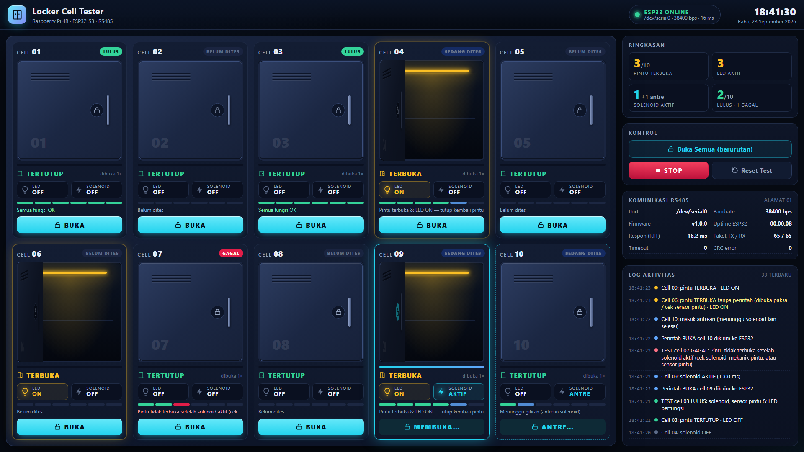

Dokumentasi Program · Versi 1.0.0 · 23 September 2026
Sistem Test Open Cell / Locker 10 Cell
Raspberry Pi 4B (kontroler utama + UI monitor 15,6") ↔ RS485 ↔ ESP32-S3-DevKitC-1 (kontroler sekunder)
1. Ringkasan sistem
Sistem ini dipakai untuk menguji fungsi buka cell (locker) sebanyak 10 cell. Operator memilih cell di layar monitor,
Raspberry Pi mengirim perintah lewat RS485, lalu ESP32 mengaktifkan solenoid lock cell tersebut selama 1 detik sehingga pintu terbuka.
Sensor pintu (kontak NO) mendeteksi pintu terbuka dan ESP32 menyalakan LED cell itu sampai pintunya ditutup kembali.
Seluruh status (pintu, LED, solenoid) tampil real-time di UI, lengkap dengan hasil test per cell.
Komponen
Peran
Program
Raspberry Pi 4B + monitor 15,6"
Kontroler utama: UI layar penuh, pengirim perintah, pencatat log & hasil test
raspi/app.py (Python 3, tanpa library tambahan selain pyserial)
Jalur komunikasi Raspberry Pi ↔ ESP32 (half-duplex, master–slave)
–
Fitur utama
Buka cell satu per satu, atau Buka Semua secara berurutan (maks. 1 solenoid aktif bersamaan agar catu daya aman).
Status per cell: pintu TERBUKA/TERTUTUP, LED ON/OFF, Solenoid AKTIF/OFF/ANTRE, jumlah dibuka, progres pulse 1 detik.
Pelacak test otomatis per cell: Perintah → Solenoid → Pintu terbuka → LED ON → Pintu tertutup → LED OFF = LULUS; jika ada langkah yang tidak terjadi = GAGAL beserta penyebabnya.
Peringatan otomatis: pintu terbuka tanpa perintah, ESP32 restart (mis. brownout saat solenoid aktif), komunikasi terputus, port error.
Tombol STOP darurat: semua solenoid OFF dan antrean dikosongkan.
LED dikendalikan langsung oleh ESP32 dari status pintu, jadi tetap bekerja walaupun Raspberry Pi mati.
Protokol RS485 dengan CRC-8, retry, deteksi echo & noise. Mode simulasi untuk latihan tanpa hardware.
Firmware menolak compile bila setting Arduino IDE atau peta pin salah (lihat bagian 2 & 6).
Gambar 1 — Diagram blok sistem
Struktur folder
LockerCellTester/
├── README.md
├── esp32/LockerController/LockerController.ino ← firmware ESP32 (buka di Arduino IDE)
├── raspi/ ← program Raspberry Pi
│ ├── app.py program utama: web server UI + menjalankan master RS485
│ ├── rs485_master.py komunikasi RS485, status cell, log, pelacak test
│ ├── protocol.py format frame + CRC-8 (identik dengan firmware)
│ ├── esp32_simulator.py simulator ESP32 (mode --sim dan pengujian)
│ ├── config.json konfigurasi (port, baudrate, timing, …)
│ ├── web/ UI: index.html, style.css, app.js
│ ├── install.sh installer (UART, service, autostart kiosk)
│ ├── kiosk.sh / start.sh menampilkan UI layar penuh / menjalankan manual
│ └── tests/ pengujian otomatis (24 test)
└── docs/ dokumentasi ini (+ PDF, screenshot)
2. Analisa pin ESP32 & temuan penting
Peta pin di bawah mengikuti dokumen "Pin PCB Cell raspi-esp32", setelah dikoreksi. Semua pin ini didefinisikan di bagian
PETA PIN pada firmware.
Cell
Solenoid Lock (output)
Indikator Pintu (input)
LED (output)
1
GPIO1
GPIO45KOREKSI
GPIO4
2
GPIO2
GPIO48
GPIO5
3
GPIO42
GPIO47
GPIO6
4
GPIO41
GPIO21
GPIO7
5
GPIO40
GPIO20 (USB D+)
GPIO15
6
GPIO39
GPIO19 (USB D−)
GPIO16
7
GPIO38
GPIO11
GPIO8
8
GPIO37
GPIO12
GPIO3
9
GPIO36
GPIO13
GPIO46
10
GPIO35
GPIO14
GPIO9
RS485: TX = GPIO17, RX = GPIO18 (UART1). Tidak dipakai: GPIO0 (tombol BOOT), GPIO10. Serial Monitor: GPIO43/44 (UART0, port USB "UART").
Temuan dari pengamatan dokumen pin
Tingkat
Temuan
Penanganan
KRITIS
GPIO15 dipakai dua kali: sebagai Indikator Pintu 1 (header kanan) dan LED 5 (header kiri). Satu GPIO tidak bisa sekaligus input dan output.
Urutan pin di dokumen sama persis dengan urutan fisik header DevKitC-1; di header kanan, pin setelah GPIO0 adalah GPIO45 (GPIO15 ada di header kiri).
Indikator Pintu 1 = GPIO45. Firmware memiliki pemeriksaan static_assert: bila ada GPIO ganda, compile langsung gagal dengan pesan "PIN GANDA".
Mohon cek jalur PCB ke pin fisik nomor 15 header kanan (J3).
KRITIS
GPIO19 & GPIO20 adalah USB D−/D+ (Indikator Pintu 6 & 5). Secara default terhubung ke USB internal ESP32-S3 (dengan pull-up di D+).
Arduino IDE: USB CDC On Boot = Disabled (firmware menolak compile bila Enabled). Upload & Serial Monitor lewat port "UART"/"COM", bukan port "USB".
Firmware melepas pad USB saat boot agar kedua pin menjadi input biasa. Jangan menyambungkan kabel ke port "USB" saat operasi.
KRITIS*
GPIO35, 36, 37 (Solenoid 10, 9, 8) dipakai internal oleh PSRAM Octal pada modul N8R8 / N16R8 / N32R8.
Pada modul N8, N16, N4R2, N8R2 pin ini bebas. *Kritis hanya untuk modul ber-PSRAM octal.
Cek tulisan di tutup logam modul (mis. ESP32-S3-WROOM-1 N16R8). Arduino IDE: PSRAM = Disabled (firmware menolak "OPI PSRAM").
Untuk modul R8, Espressif menyatakan pin ini tidak tersedia: uji solenoid 8–10 dengan teliti; bila tidak stabil, gunakan modul tanpa PSRAM octal atau ubah jalur PCB.
PENTING
GPIO45 = pin strapping VDD_SPI (Indikator Pintu 1). Bila pin ini HIGH saat ESP32 dinyalakan, tegangan flash menjadi 1,8 V → ESP32 gagal boot (modul flash 3,3 V).
Wiring default (kontak NO ke GND + pull-up internal) aman: pin LOW/mengambang saat boot. Jangan memasang resistor pull-up eksternal ke 3V3 pada pin ini dan jangan memakai wiring kontak-ke-3V3 untuk pintu 1.
Alternatif permanen: burn eFuse espefuse.py set_flash_voltage 3.3V (tidak bisa dibatalkan).
PENTING
GPIO46 = pin strapping (LED 9). Saat masuk mode download (GPIO0 LOW), GPIO46 harus LOW.
Rangkaian LED 9 tidak boleh menarik pin ke HIGH saat boot (gunakan LED aktif-HIGH ke GND via resistor, atau driver transistor dengan pull-down).
INFO
GPIO3 (LED 8) adalah strapping JTAG; tidak berpengaruh pada setting eFuse default. GPIO39–42 (Solenoid 3–6) adalah pin JTAG, bebas dipakai karena JTAG lewat USB.
Tidak perlu tindakan.
INFO
LED RGB bawaan board (WS2812) terhubung ke GPIO48 (DevKitC-1 v1.0) atau GPIO38 (v1.1).
GPIO48 dipakai sebagai input pintu 2: aman. Pada board v1.1, LED RGB bawaan bisa berkedip saat solenoid 7 (GPIO38) aktif: tidak berbahaya.
INFO
Semua GPIO ESP32-S3 dan Raspberry Pi bekerja pada 3,3 V dan tidak toleran 5 V. GPIO tidak mampu menggerakkan solenoid secara langsung.
Modul RS485 harus diberi VCC 3,3 V (atau memakai level shifter). Solenoid lewat driver MOSFET + dioda flyback (bagian 3).
3. Wiring & kebutuhan hardware
Raspberry Pi 4B ↔ Modul RS485 #1
Raspberry Pi
Modul RS485
Pin fisik 8 — GPIO14 (TXD)
DI / TXD
Pin fisik 10 — GPIO15 (RXD)
RO / RXD
Pin fisik 1 — 3V3
VCC
Pin fisik 6 — GND
GND
ESP32-S3 ↔ Modul RS485 #2
ESP32-S3-DevKitC-1
Modul RS485
GPIO17 (TX UART1)
DI / TXD
GPIO18 (RX UART1)
RO / RXD
3V3
VCC
GND
GND
Antar modul: A–A, B–B, dan GND–GND dengan kabel twisted pair. Untuk kabel panjang pasang terminasi 120 Ω di kedua ujung (banyak modul sudah memiliki resistor ini).
Modul RS485 yang disarankan: tipe auto-direction (hanya TX/RX, sesuai PCB) yang bekerja pada 3,3 V, mis. berbasis MAX3485/SP3485. Bila memakai MAX485 dengan pin DE/RE, isi RS485_DE_PIN di firmware (mis. GPIO10) dan gunakan modul auto-direction di sisi Raspberry Pi.
Label TX/RX modul berbeda-beda. Bila tidak ada komunikasi sama sekali, tukar kabel TX/RX di sisi modul terlebih dahulu.
Indikator pintu (default firmware): kontak NO dipasang antara GPIO dan GND; firmware memakai pull-up internal. Pintu tertutup → kontak terhubung → GPIO LOW (aktif). Bila rangkaian Anda aktif-HIGH (kontak ke 3V3), ubah DOOR_CLOSED_LEVEL dan DOOR_INPUT_MODE (perhatikan catatan GPIO45).
Solenoid: GPIO → resistor 100 Ω → gate MOSFET N logic-level (mis. AO3400/IRLZ44N), resistor pull-down 10 kΩ gate–GND, dioda flyback (1N4007/SS14) paralel terbalik pada solenoid. Catu 12 V terpisah dengan GND bersama.
LED: GPIO → resistor 220–330 Ω → LED → GND (arus ≤ 10 mA), atau lewat transistor untuk LED 12 V.
4. Cara kerja sistem
Operator menekan tombol BUKA pada cell ke-n di layar.
UI mengirim permintaan ke program Raspberry Pi (POST /api/open). Program memasukkan perintah ke antrean.
Thread master RS485 mengirim frame >01,OPEN,n*CC ke ESP32 (alamat 01) dan menunggu ACK (retry maks. 3×).
ESP32 memvalidasi CRC & alamat, lalu mengaktifkan GPIO solenoid cell n. Timer millis() mematikan solenoid tepat setelah 1000 ms. Bila ada solenoid lain yang masih aktif, perintah masuk antrean dan dijalankan setelahnya.
Kunci terlepas dan pintu terbuka. Kontak NO pada indikator pintu lepas sehingga input menjadi tidak aktif. Setelah stabil 50 ms (debounce), ESP32 menandai pintu n TERBUKA dan menyalakan LED n.
Setiap 150 ms Raspberry Pi meminta status (STAT). ESP32 membalas status pintu, LED, solenoid, dan antrean seluruh cell. UI menampilkan perubahan dalam ±0,25 detik.
Saat pintu ditutup kembali, kontak NO terhubung, input aktif, ESP32 mematikan LED n. UI menandai test cell nLULUS.
Gambar 2 — Sequence diagram membuka cell ke-n
Parameter waktu
Nilai
Diatur di
Lama solenoid aktif per perintah
1000 ms
Firmware SOLENOID_PULSE_MS
Solenoid aktif bersamaan (sisanya antre)
1
Firmware MAX_ACTIVE_SOLENOIDS
Debounce indikator pintu
50 ms
Firmware DOOR_DEBOUNCE_MS
Polling status oleh Raspberry Pi
150 ms
config.jsonpoll_interval_ms
Batas waktu balasan ESP32
200 ms
config.jsonresponse_timeout_ms
Refresh tampilan UI
250 ms
web/app.jsPOLL_MS
Status OFFLINE setelah gagal berturut-turut
3 kali
config.jsonoffline_after_failures
5. Protokol komunikasi RS485
Komunikasi ASCII 8N1, 38400 bps, pola master–slave: Raspberry Pi selalu bertanya, ESP32 hanya menjawab (tidak pernah mengirim duluan) sehingga tidak terjadi tabrakan di bus half-duplex.
Master → ESP32 : >AA,PERINTAH[,ARGUMEN]*CC\n
ESP32 → Master : <AA,BALASAN,...*CC\n
AA = alamat node 2 digit (01)
CC = CRC-8 (poly 0x07, init 0x00) dari teks di antara '>'/'<' dan '*', ditulis 2 digit HEX
nilai cek: CRC-8("123456789") = F4 (dipakai sebagai self-test saat ESP32 boot)
Perintah
Contoh request
Contoh balasan
Keterangan
PING
>01,PING*13
<01,PONG,1.0.0,10,POWERON*A1
Versi firmware, jumlah cell, alasan reset terakhir (POWERON / BROWNOUT / WDT / PANIC / SW / EXT)
STARTED = langsung aktif, QUEUED = masuk antrean, ALREADY_ON / ALREADY_QUEUED = sudah diproses
OPEN (salah)
>01,OPEN,11*16
<01,NAK,OPEN,BADARG*91
Nomor cell di luar 1–10
STOP
>01,STOP*6A
<01,ACK,STOP*D2
Semua solenoid OFF dan antrean dikosongkan
Frame dengan CRC salah atau alamat lain diabaikan ESP32 (tidak dibalas); Raspberry Pi menghitungnya sebagai timeout lalu mengulang (OPEN/STOP) atau menunggu polling berikutnya (STAT).
Echo frame sendiri (sebagian modul RS485 memantulkan data yang dikirim) dan byte sampah otomatis diabaikan oleh kedua sisi.
Kolom alamat memungkinkan penambahan ESP32 lain di bus yang sama di kemudian hari (alamat 02, 03, …).
6. Program ESP32 (Arduino IDE)
File: esp32/LockerController/LockerController.ino. Satu file, tanpa library tambahan. Seluruh proses non-blocking (tanpa delay() panjang): loop berjalan ribuan kali per detik sehingga pembacaan pintu dan timer solenoid selalu tepat.
Setting Arduino IDE (menu Tools)
Menu
Nilai
Alasan
Board
ESP32S3 Dev Module (paket esp32 by Espressif, diuji v3.3.12)
–
USB CDC On Boot
Disabled
GPIO19/20 dipakai indikator pintu 6 & 5 (compile gagal bila Enabled)
PSRAM
Disabled (atau QSPI PSRAM untuk modul N8R2)
OPI PSRAM memakai GPIO35–37 (compile gagal bila OPI)
Flash Mode / Flash Size
QIO 80MHz / sesuai modul (N8 = 8MB, N16 = 16MB)
–
Port
COM dari port USB berlabel UART / COM
Port "USB" (native) tidak dipakai
Serial Monitor
115200 baud, line ending Newline
Log & perintah debug
Parameter konfigurasi (bagian 1 firmware)
#define
Default
Fungsi
NODE_ADDRESS
1
Alamat ESP32 di bus RS485 (harus sama dengan node_address di config.json)
RS485_BAUD
38400
Baudrate RS485 (harus sama dengan baudrate di config.json)
RS485_TX_PIN / RS485_RX_PIN
17 / 18
Pin UART1 ke modul RS485
RS485_DE_PIN
-1
-1 = modul auto-direction. Isi GPIO bila modul memerlukan DE/RE
RS485_TURNAROUND_US
1500
Jeda sebelum membalas (transceiver master sempat pindah ke mode terima)
SOLENOID_PULSE_MS
1000
Lama solenoid aktif
MAX_ACTIVE_SOLENOIDS
1
Solenoid aktif bersamaan; sisanya antre (FIFO)
DOOR_DEBOUNCE_MS
50
Debounce sensor pintu
SOLENOID_ON_LEVEL / LED_ON_LEVEL
HIGH / HIGH
Level GPIO untuk mengaktifkan driver solenoid / LED
DOOR_CLOSED_LEVEL / DOOR_INPUT_MODE
LOW / INPUT_PULLUP
Level GPIO saat pintu tertutup (kontak NO ke GND). Alternatif: HIGH / INPUT_PULLDOWN
Fungsi utama
Fungsi
Tugas
setup()
Output OFF lebih dulu, lepas GPIO19/20 dari USB, set input pintu, buka Serial & RS485, baca status awal pintu → LED, self-test CRC, aktifkan watchdog
pollRs485()
Mengumpulkan byte menjadi frame (sinkron ulang di karakter '>', buang frame terpotong > 50 ms)
handleRs485Frame()
Cek format, CRC-8, alamat; eksekusi STAT / OPEN / STOP / PING; kirim balasan
requestOpen()
Aktifkan solenoid bila slot tersedia, atau masukkan ke antrean
updateSolenoids()
Matikan solenoid yang sudah aktif ≥ 1000 ms dan jalankan antrean berikutnya
updateDoors()
Debounce indikator pintu; saat status berubah, LED mengikuti (terbuka = ON, tertutup = OFF)
stopAll()
Semua solenoid OFF, antrean dikosongkan
handleDebugCommand()
Perintah teks dari Serial Monitor untuk test tanpa Raspberry Pi
Gambar 3 — Flowchart firmware ESP32 (setup & loop)Gambar 4 — Logika perintah OPEN n (antrean solenoid) dan indikator pintu → LED
Perintah debug di Serial Monitor
Ketik
Fungsi
open 3
Buka cell 3 (solenoid 1 detik)
all
Buka semua cell berurutan
stop
Matikan semua solenoid & kosongkan antrean
stat
Tabel status semua cell (level GPIO pintu, pintu, LED, solenoid, antrean, jumlah dibuka)
diag
stat + level logika yang dipakai + statistik RS485 (rx, tx, CRC error, dll.) + uptime & alasan reset
help
Daftar perintah
==================================================================
LOCKER CONTROLLER ESP32-S3 | FW 1.0.0 | Node 01 | 10 cell
RS485 UART1 38400 bps 8N1 (TX=GPIO17, RX=GPIO18, DE=-1)
Pulse solenoid 1000 ms, maks 1 aktif bersamaan | reset: POWERON
Self-test CRC-8: OK
==================================================================
[ 12.418] RS485 | OPEN 3 -> STARTED
[ 12.418] CELL 03 | SOLENOID ON (1000 ms)
[ 12.702] CELL 03 | PINTU TERBUKA -> LED ON
[ 13.418] CELL 03 | SOLENOID OFF
[ 18.955] CELL 03 | PINTU TERTUTUP -> LED OFF
Pemeriksaan otomatis saat compile
Firmware sengaja gagal compile dengan pesan berbahasa Indonesia bila: board bukan ESP32-S3, USB CDC On Boot = Enabled, PSRAM/Flash = OPI,
ada GPIO ganda (mis. GPIO15 dipakai dua fungsi seperti di dokumen awal), atau memakai GPIO terlarang (22–32 flash, 43/44 UART0).
7. Program Raspberry Pi
File
Isi
app.py
Entry point. Membaca config, menjalankan thread master RS485 dan web server lokal (http://127.0.0.1:8080) yang menyajikan UI + API JSON
rs485_master.py
Satu-satunya thread yang berbicara ke ESP32: antrean perintah (STOP didahulukan), polling STAT, retry, deteksi offline/restart, log event, pelacak test per cell
protocol.py
Pembuat & pengurai frame, CRC-8, parser balasan STAT
esp32_simulator.py
Tiruan ESP32 (logika sama dengan firmware) untuk mode --sim dan test otomatis
web/
UI (HTML/CSS/JS murni, tanpa internet/CDN)
logs/locker.log
Log aktivitas (dibuat otomatis, rotasi 5 × 1 MB)
config.json
Kunci
Default
Keterangan
serial_port
/dev/serial0
UART GPIO14/15. Bisa juga /dev/ttyUSB0 bila memakai adaptor USB-RS485
baudrate
38400
Harus sama dengan RS485_BAUD firmware
node_address
1
Harus sama dengan NODE_ADDRESS firmware
num_cells
10
Jumlah cell
poll_interval_ms / response_timeout_ms
150 / 200
Periode polling STAT / batas waktu balasan
command_retries / offline_after_failures
3 / 3
Retry perintah OPEN/STOP / jumlah gagal berturut sebelum OFFLINE
solenoid_detect_timeout_s
3
Test GAGAL bila solenoid tidak terlihat aktif
door_open_timeout_s
4
Test GAGAL bila pintu tidak terbuka setelah solenoid OFF
unauthorized_open_window_s
10
Pintu terbuka lebih dari 10 s setelah perintah terakhir dianggap "tanpa perintah"
http_host / http_port
127.0.0.1 / 8080
Default hanya bisa diakses dari Pi sendiri. Isi 0.0.0.0 untuk akses dari jaringan (tanpa login, gunakan hanya di jaringan tertutup)
API lokal (dipakai UI)
Endpoint
Fungsi
GET /api/state
Status lengkap: link RS485, 10 cell, ringkasan, 80 event terakhir
POST /api/open{"cell": n}
Buka cell n
POST /api/open_all
Buka semua cell berurutan
POST /api/stop
STOP darurat
POST /api/test/reset
Reset hasil test & hitungan
POST /api/sim/door{"cell": n}
(hanya mode simulasi) buka/tutup pintu
Gambar 5 — Flowchart program Raspberry Pi
Pelacak hasil test per cell
Setiap kali perintah BUKA diterima ESP32 (ACK), cell masuk status SEDANG DITES. Enam langkah dicentang otomatis dari data STAT.
Test LULUS bila keenam langkah terjadi; GAGAL bila salah satu batas waktu terlewati. Pesan penyebab tampil di kartu cell dan log.
Gambar 6 — Alur test per cell
8. Tampilan UI & cara pakai

Gambar 7 — UI pada monitor 1920×1080. Cell 01 & 03 lulus, cell 04 & 09 terbuka (LED ON), cell 09 solenoid aktif, cell 10 antre, cell 07 gagal, cell 06 dibuka tanpa perintah.
UI juga pas tanpa scroll di 1366×768.
Elemen
Arti
Kartu cell
Gambar pintu locker: berayun terbuka saat pintu terbuka, strip LED di dalam menyala kuning saat LED ON. Bingkai kuning = pintu terbuka, bingkai cyan menyala = solenoid aktif, bingkai putus-putus = antre, abu-abu = data tidak valid (offline)
Bar tipis di bawah pintu
Progres pulse solenoid 1 detik
LED / SOLENOID
Status output GPIO ESP32: ON/OFF, AKTIF/OFF/ANTRE
6 segmen + badge
Langkah test (hijau = selesai, biru berkedip = sedang ditunggu, merah = gagal). Badge: BELUM DITES / SEDANG DITES / LULUS / GAGAL
Tombol BUKA
Nonaktif saat ESP32 offline, perintah sedang dikirim, solenoid aktif, atau cell antre
Header kanan
Status link: ESP32 ONLINE (hijau), MENGHUBUNGKAN (kuning), OFFLINE / PORT ERROR / SERVER MATI (merah) + port, baudrate, waktu respon
Panel kanan
Ringkasan, kontrol (Buka Semua dengan konfirmasi, STOP, Reset Test), statistik RS485 (TX/RX, timeout, CRC error, uptime ESP32), log aktivitas
Keluar dari mode kiosk: Alt+F4. UI mendukung mouse maupun layar sentuh.
9. Instalasi & menjalankan
9.1 ESP32-S3
Arduino IDE → Boards Manager → pasang esp32 by Espressif Systems (v3.x).
Buka esp32/LockerController/LockerController.ino.
Atur menu Tools sesuai tabel di bagian 6. Hubungkan kabel ke port UART/COM board.
Klik Upload. Bila upload tidak mulai: tahan tombol BOOT, tekan RST, lepas BOOT.
Buka Serial Monitor 115200 → pastikan banner muncul dan Self-test CRC-8: OK. Ketik diag untuk memeriksa level pintu.
9.2 Raspberry Pi 4B (Raspberry Pi OS Desktop, Bookworm/Bullseye)
Salin folder LockerCellTester ke Raspberry Pi, mis. ke /home/pi/LockerCellTester (flashdisk atau scp).
Buka Terminal lalu jalankan:
cd ~/LockerCellTester/raspi
bash install.sh
sudo reboot
Installer memasang python3-serial & Chromium, menambah user ke grup dialout, mengaktifkan UART GPIO14/15 (enable_uart=1, dtoverlay=disable-bt, console serial dimatikan, backup file boot dibuat),
memasang service locker-tester dan autostart UI kiosk. Bluetooth dinonaktifkan agar UART PL011 stabil; bila Bluetooth dibutuhkan jalankan KEEP_BT=1 bash install.sh.
Setelah reboot, UI tampil layar penuh otomatis.
Menjalankan manual / simulasi
cd ~/LockerCellTester/raspi
python3 app.py --sim # simulasi tanpa hardware, buka http://127.0.0.1:8080
python3 app.py --sim --sim-faulty 7 # simulasi dengan cell 7 "rusak" (test GAGAL)
python3 app.py --port /dev/ttyUSB0 # hardware, port lain
bash start.sh # backend + UI kiosk (hentikan service dulu)
python3 -m unittest discover -s tests -v # jalankan 24 test otomatis
Perintah service
systemctl status locker-tester # status backend
journalctl -u locker-tester -f # log langsung
sudo systemctl restart locker-tester # restart setelah mengubah config.json
sudo systemctl disable --now locker-tester # nonaktifkan
rm ~/.config/autostart/locker-kiosk.desktop # hentikan autostart kiosk
10. Prosedur test fungsi (commissioning)
ESP32 saja (tanpa Raspberry Pi). Serial Monitor → stat: semua pintu yang tertutup harus terbaca TERTUTUP. Buka satu pintu dengan tangan → log PINTU TERBUKA → LED ON dan LED fisik menyala. Jika terbalik, ubah DOOR_CLOSED_LEVEL.
Ketik open 1 s.d. open 10: solenoid tiap cell harus berbunyi/aktif 1 detik dan pintu terbuka. Perhatikan khusus Solenoid 8–10 bila modul ber-PSRAM octal.
Hubungkan RS485. Nyalakan Raspberry Pi → header UI harus ESP32 ONLINE, log berisi ESP32 terhubung · FW 1.0.0. Nilai timeout & CRC error seharusnya tetap 0.
Tekan BUKA tiap cell: solenoid AKTIF, pintu TERBUKA, LED ON, lalu tutup pintu → badge LULUS.
Tekan Buka Semua → semua cell terbuka bergantian 1 detik. Pastikan ESP32 tidak restart (tidak ada peringatan restart / BROWNOUT di log).
Uji STOP saat Buka Semua berjalan: antrean berhenti.
Compile error "USB CDC On Boot harus Disabled" / "PSRAM jangan OPI" / "PIN GANDA"
Setting Arduino IDE atau peta pin salah. Ikuti pesan error (bagian 2 & 6).
ESP32 tidak mau boot / boot loop saat pintu 1 tertutup
GPIO45 (Indikator Pintu 1) HIGH saat boot. Pastikan wiring kontak ke GND tanpa pull-up eksternal, atau burn eFuse flash 3,3 V.
UI: PORT ERROR
UART belum aktif atau izin. Jalankan install.sh, reboot, cek ls -l /dev/serial0. Pastikan user ada di grup dialout.
UI: ESP32 OFFLINE, TX bertambah tetapi RX 0
Tukar TX/RX di modul, periksa A–A B–B & GND, samakan baudrate (38400) & alamat (01), pastikan ESP32 menyala. Cek diag di ESP32: bila rx bertambah berarti data Pi sampai.
CRC error sering bertambah
Kabel terlalu panjang/tanpa twisted pair, tidak ada GND bersama, terminasi 120 Ω kurang/berlebih, noise dari kabel solenoid. Turunkan baudrate (mis. 19200) di kedua sisi.
Peringatan "ESP32 restart" / reset BROWNOUT saat solenoid aktif
Catu daya drop. Pisahkan catu solenoid, tambah kapasitor elko besar, pastikan dioda flyback terpasang.
Status pintu terbalik (tertutup terbaca terbuka)
Ubah DOOR_CLOSED_LEVEL (LOW ↔ HIGH) dan DOOR_INPUT_MODE sesuai rangkaian.
Pintu 5 atau 6 selalu terbaca salah
Kabel masih tercolok di port "USB" (native), atau USB CDC On Boot aktif. Pakai port UART saja.
Solenoid 8/9/10 tidak bekerja atau ESP32 crash
Modul ber-PSRAM octal (N8R8/N16R8). Lihat temuan GPIO35–37 di bagian 2.
Test GAGAL "Pintu tidak terbuka"
Solenoid tidak menarik (driver/catu/kabel), mekanik pintu macet, atau sensor pintu tidak berubah.
UI tidak muncul setelah boot
systemctl status locker-tester; jalankan ~/LockerCellTester/raspi/kiosk.sh manual untuk melihat error. Layar mati otomatis: raspi-config → Display → Screen Blanking → No.
24 test dijalankan 3× berturut-turut, dengan ResourceWarning sebagai error
LULUS
Kompatibilitas Python
Sintaks diperiksa untuk Python 3.9 (Bullseye) – diuji jalan di 3.14
LULUS
UI
Diuji di browser 1920×1080 & 1366×768: tanpa scroll/overflow, 0 error console, klik BUKA, Buka Semua + konfirmasi, cell gagal, tampilan PORT ERROR & SERVER MATI
LULUS
Skrip shell
bash -n install.sh / kiosk.sh / start.sh, line ending LF
LULUS
Belum bisa diuji tanpa hardware: upload & eksekusi firmware di board ESP32-S3 fisik, level listrik rangkaian PCB (sensor pintu, driver solenoid, LED), modul RS485 dan UART Raspberry Pi yang sebenarnya.
Logika firmware diverifikasi lewat compile nyata + simulator Python yang meniru perilakunya. Lakukan prosedur commissioning di bagian 10 saat hardware siap.